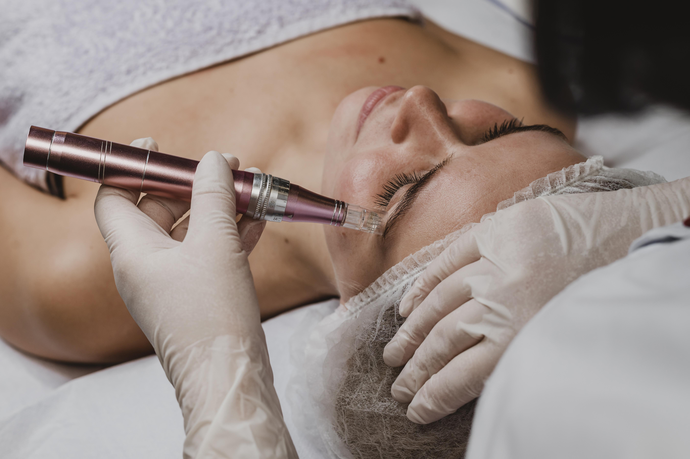

Micro-Needling
Le micro-needling est une technique de rajeunissement de la peau qui utilise de fines aiguilles pour créer des micro-perforations, stimulant ainsi la production de collagène et d'élastine pour une peau plus ferme et lisse.
